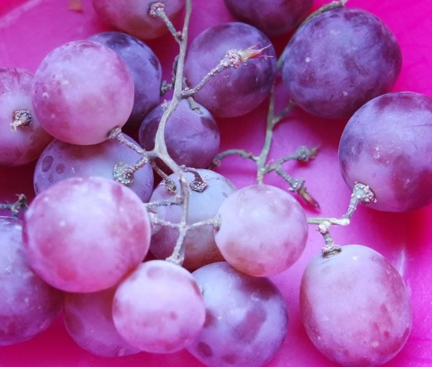
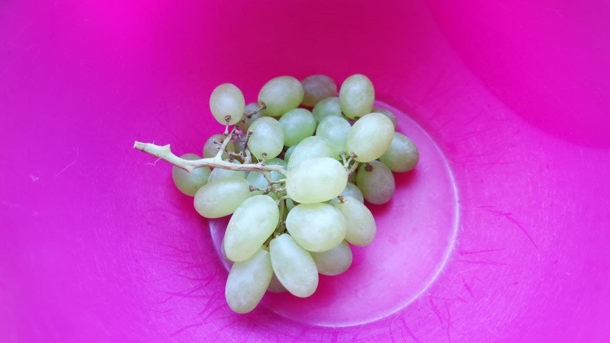
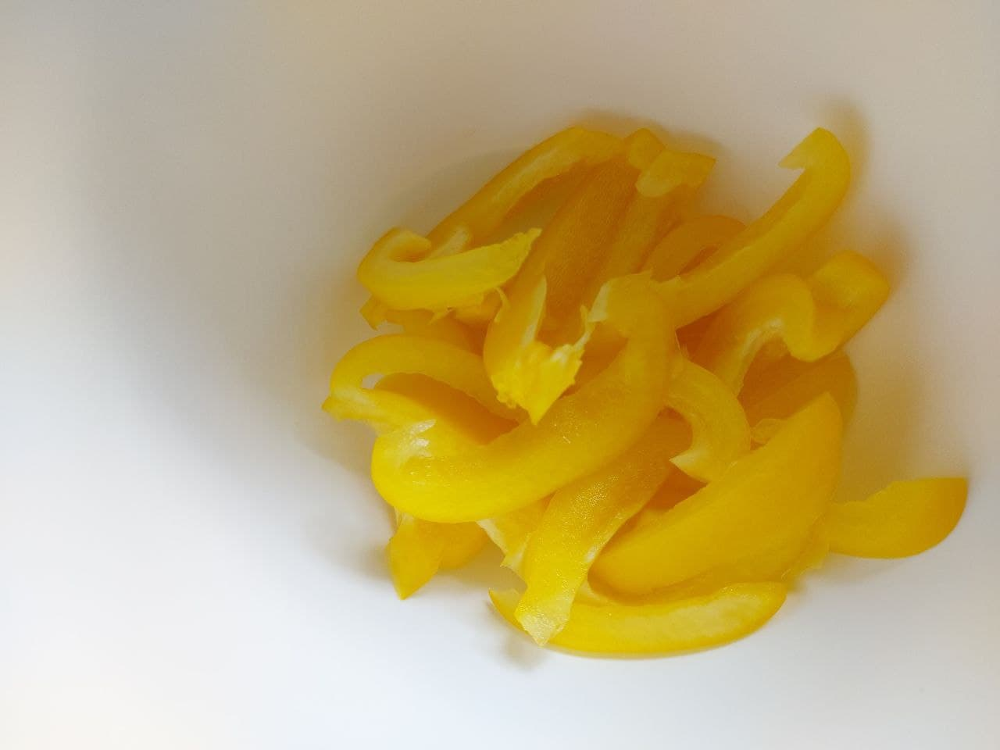

Farbkontraste
schwacher Farbkontrast, geringe Sätting,
starker Farbkontrast, geringe Sättigung
Bunt - Unbut Kontrast, starke Sättigung
Komplementärkontrast / PrimärfarbenKontrast, starke Sättigung
Warm - Kaltfarbenkontrast, starke Sättigung